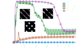
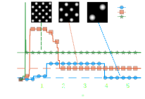

Introduction
About me
- Born and raised in Graz
- Civil service in the beginning of 2009
- Started studying physics in 2009 and philosophy in 2011
- Wasn't the best B.Sc. student
- Rather active person with multiple hobbies
HEP and I
\[\mathcal{L} = \frac{1}{2}(D_{\mu}\phi^{ij})_a (D^{\mu}\phi^{ij})^{\ast}_a \\ -\frac{1}{2}\psi^{T}_{iaL}\epsilon(D\!\!\!/\psi^i_R)_a + \frac{1}{2}\psi^{iT}_{aR}\epsilon(D\!\!\!/\psi_{iL})_a \\ -\frac{1}{4}F_{a\mu\nu}F^{a\mu\nu} - g\sqrt{2}\text{Re}f^{abc}\phi^{ij}_a(\psi_{ibL}^T\epsilon\psi_{jcL}) \\ - \frac{g^2}{8}|f^{abc}\phi^{ij}_b\phi^{kl}_c|^2 + \frac{g^2\theta}{64\pi^2}\epsilon_{\mu\nu\rho\sigma}F_a^{\mu\nu}F_a^{\rho\sigma}\] S. Weinberg, The Quantum Theory of Fields III, Cambridge University Press 2005HEP and I
A. Maas and S. Zitz, EPJC, 76(113) 2016CFD at different scales

D. Raabe, Modelling Simul. Mater. Sci. Eng., 12 2004
Swalbe.jl
“Weeks of coding have saved me hours of thinking.”
\[\partial_t h + \nabla \cdot (h \mathbf{u}) = 0\\ \mathbf{u} \approx \frac{1}{\nu \alpha(h)}\left(-gh \nabla h -\frac{1}{\rho_0}h\nabla p + \mathbf{F}\right) \\ \partial_t h \approx \nabla \cdot \left(\frac{h^3}{3\mu}\nabla p\right)\] S. Zitz et al., JOSS, 7(77) 2022, S. Zitz et al., PRE, 100(3) 2019
Swalbe.jl
“Ideas can be implemented and tested quickly with a two dimensional system....”
\[\partial_t h = \partial_x \left[M(h)\partial_x p + \sqrt{2k_BT M(h)}\mathcal{N}\right] \]
\[F_{\text{fluc}} = \frac{1}{\rho_0}\sqrt{2k_BT\mu\alpha(h)}\mathcal{N}\]
G. Grün et al., J. Stat. Phys., 112, 2006; S. Zitz et al., PRE, 104, 2021
Fluctuating thin films

\[S(q,t) = S_0 e^{2\omega(q)t} + \frac{\sigma^2 h_0^2 L}{q_0^2}g\left(\frac{q}{q_0}\right)(e^{2\omega(q)t} - 1)\]
G. Grün et al., J. Stat. Phys., 112, 2006; K. Mecke and M. Rauscher, J. Phys.: Condens. Matter, 17, 2005
Switchable Substrates


Switchable substrates
S. Zitz et al., Phys. Rev. Fluid, 8 2023
Morphologies

\[\Gamma = \frac{v_{\theta}}{U_{\theta}}, \quad U_{\theta} = \frac{\gamma\Theta^3}{9\mu}\]
Electrolyzers
- Flow profiles
- Boundary conditions
A. Rajora & J.W. Haverkort, Int. J. Hydrog. Energy, 2023
Circular flows
Conclusion
- Developed, documented and tested software
- Focused on wettability and surface tension
- Touched LBM and finite volume (OpenFOAM)
Thank you!
Questions? üßê
Backup slides
Static pattern

Time scale $t_0$ \[ t_0 = \frac{3\mu}{\gamma h_0^3q_0^4} \] Length scale $2\pi/q_0$ \[ q_0^2 = \frac{1}{2\gamma}\frac{\partial \Pi(h)}{\partial h}\bigg\rvert_{h=h_0} \]
K. Mecke, M. Rauscher, J. Phys. Condens. Matter, 17 2005
Droplet advection
Droplet advection
J. Grawitter and H. Stark, Soft Matter, 17 2021
Metastable rivulets
\[\Delta h(t)\sim \frac{\lambda}{v_{\theta}}e^{\alpha t},\quad \Delta h(\tau_{\text{riv}})\sim \beta h_0\\ \tau_{\text{riv}} \sim \log(v_{\theta})\sim\log(\Gamma)\]

S. Zitz et al., Phys. Rev. Fluid, 8 2023